{kind=link}

Yellowstone National Park
We entered through the West Gave of Yellowstone National Park. Just before entering we had our food around 11AM so that we are not hungry while enjoying the National Park. We will talk more about our journey and food in some upcoming blog. Yellowstone is mainly located in Wyoming but its partly located in Montana and Idaho as well. The West Gate is located in Montana. It is the first National Park in US with 2,219,791 acres of land. It has rivers, mountains and forests.

The most interesting part of Yellowstone is the hot spring and thrilling volcanic spots. Yellowstone River flows inside the National Park which adds life to the animals and the wild life if the forest.
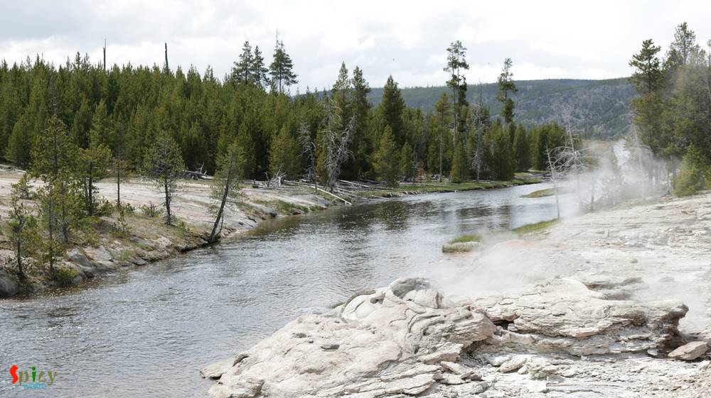

 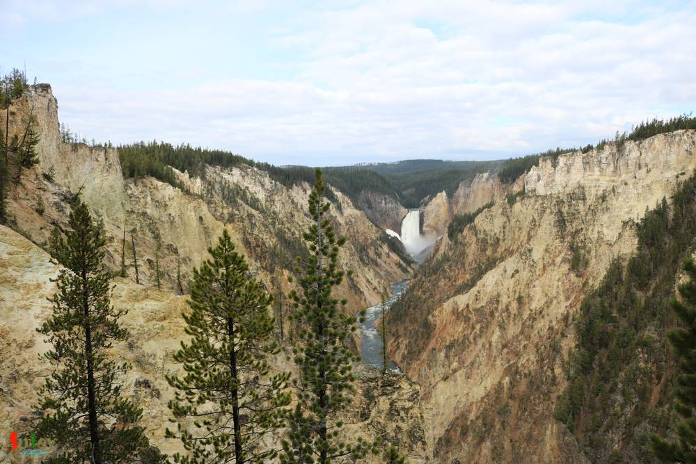
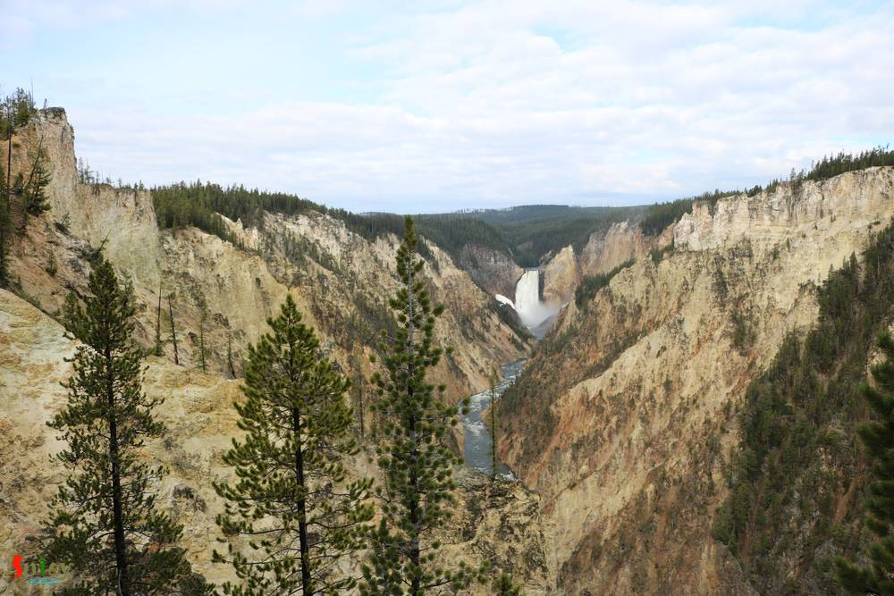Lake Powell
We mainly stopped at "Carl Hayden Visitor Center at Glen Canyon Dam" and saw the beautiful Lake Powell. It has its own beauty, the calmness of the lake and the natural color contrast take the visitors' breath away.
Bryce Canyon National Park
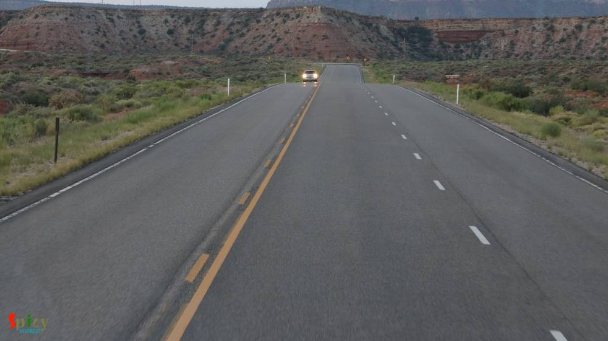
Now the journey started for the Bryce Canyon the most beautiful canyon we have ever seen. Its located south-west Utah. Its a collection of giant natural amphitheaters which makes it uniquely beautiful.
 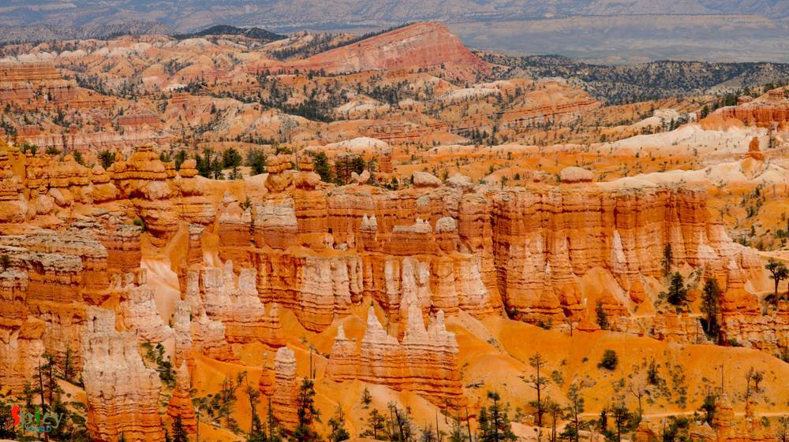
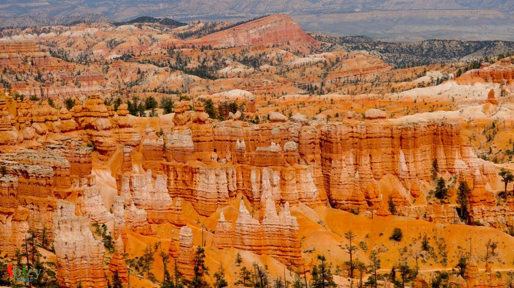We are happy to find lot of beautiful birds as well. The birds were surplus to our gatherings. We found Western Bluebird, White-breasted Nuthatch and Steller's Jay.
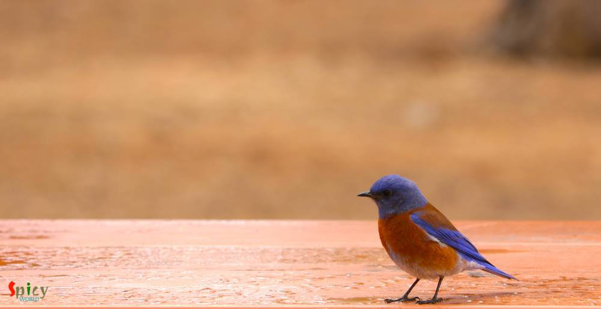 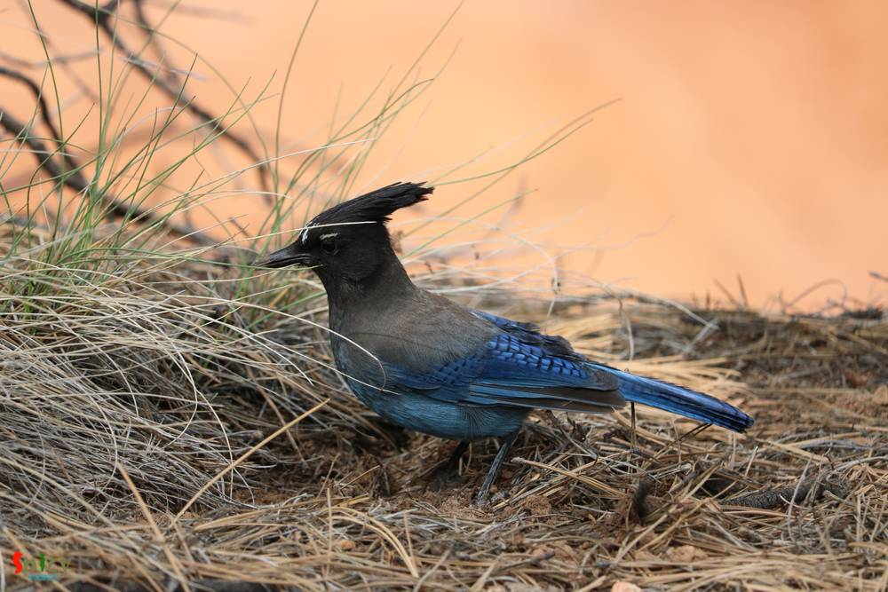
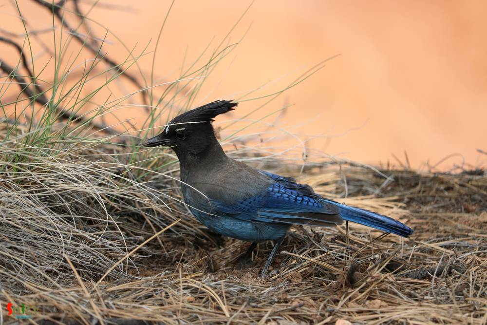Antelope Canyon National Park
What should I say about this, no words can describe this place, only one word AWESOME!!! We went to the lower Antelope Canyon. They offer a guided tour. The tour guide was funny and full of plenty of information. Entering the canyon was a bit difficult (not that difficult, but old/aged people might find a bit difficult). And once you are inside the view is breath-taking.


Grand Teton National Park
This is the heaven, the view from behind the lake with the mountains having snow is just Fantastic and Picture Perfect.


Las Vegas
Here comes the final destination, the Fabulous Las Vegas, the entertainment capitol of World. The city with color. We started from the Fabulous Las Vegas sign and walked across the strip and sneak-peak around the beautiful Hotel architectures and spent money in all most all of the hotel Casinos (We are not encouraging anyone to spent money in Casino). We also went to the High Roller which is basically the replica of London Eye. The view was awesome from the top of it.


 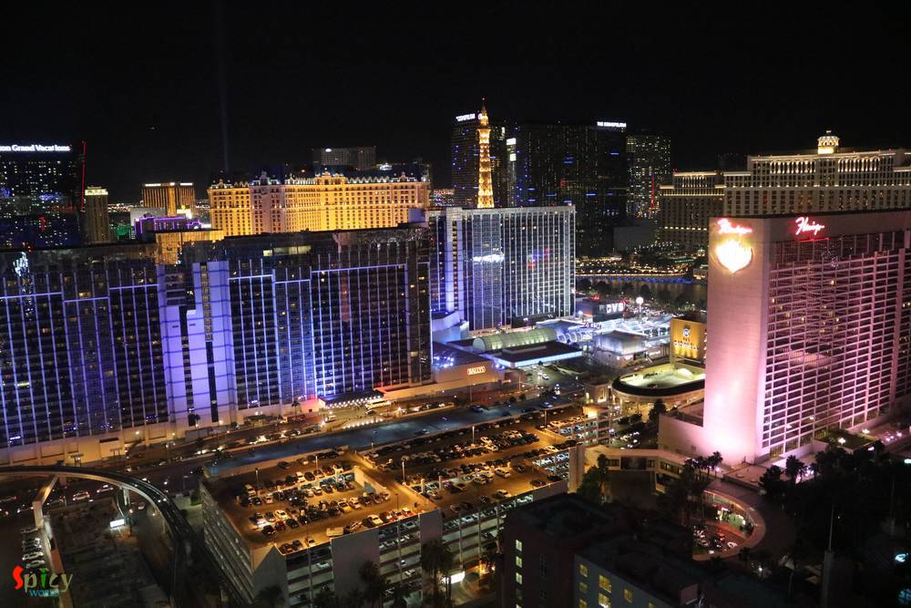
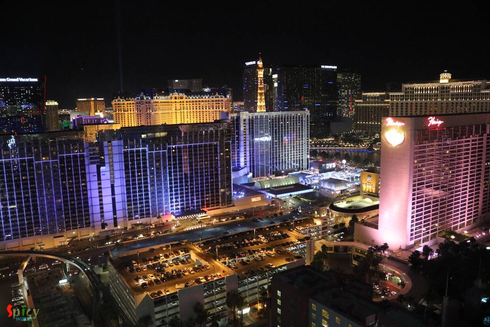With this our trip comes to an end. We visited lot of places and loved almost all the places. To know more about the food and details of the places please keep following us for the upcoming posts on those.